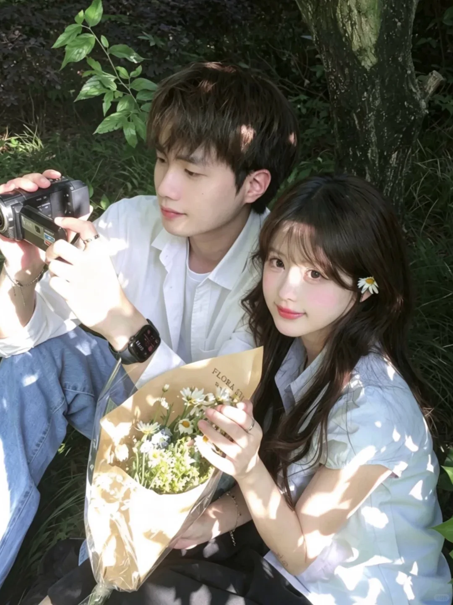
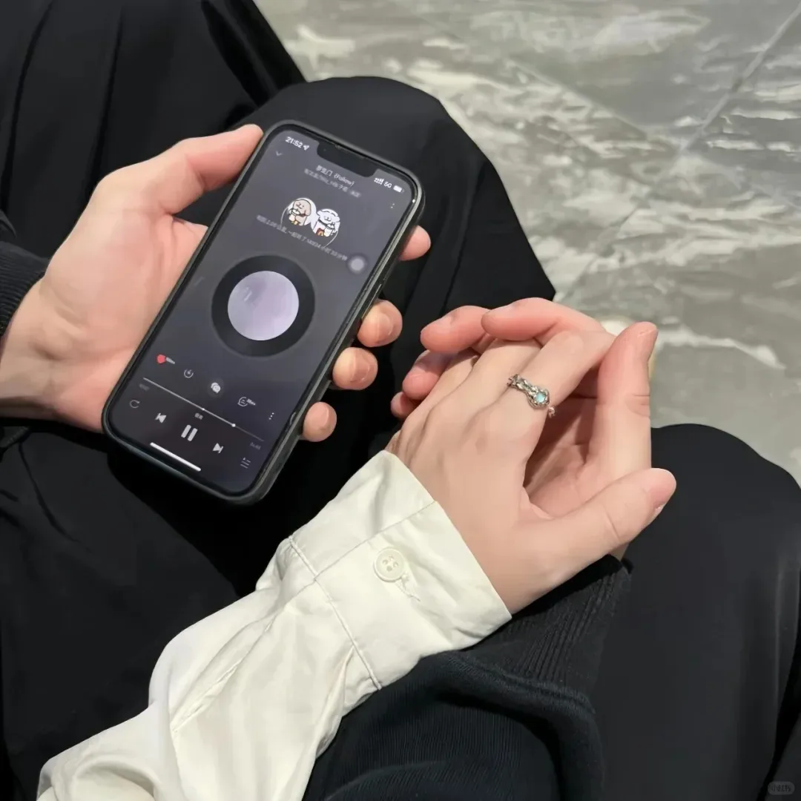
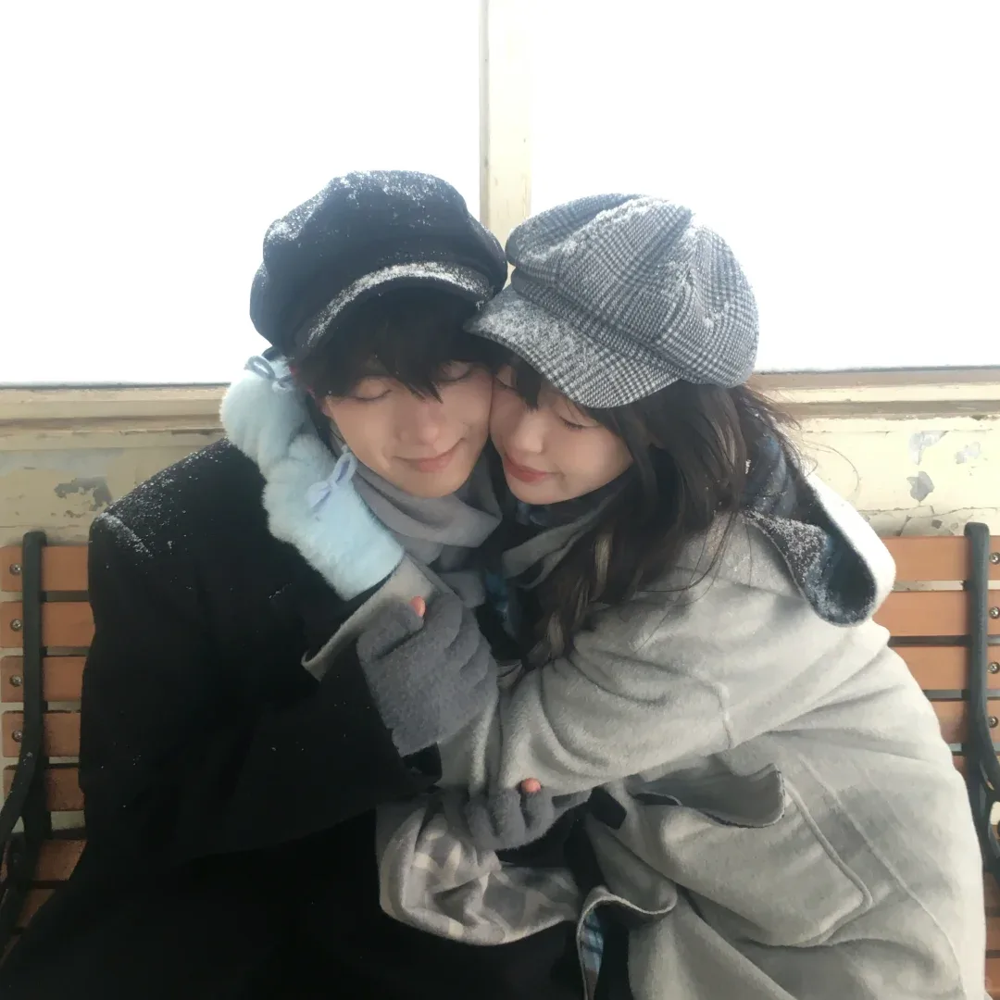
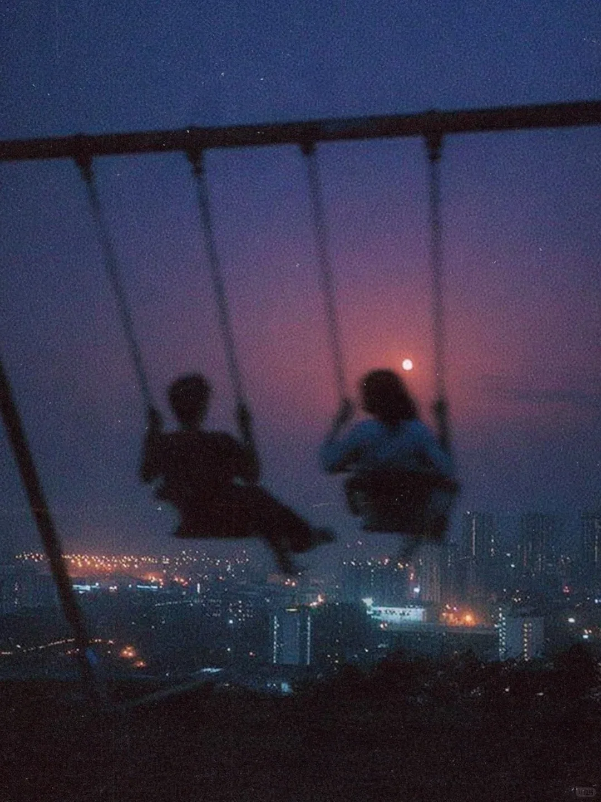

1

2025.06.27
故事有了名字
那天没有电影里的盛大配乐，只是从一句认真说出口的喜欢开始，我们把“你和我”写成了“我们”。
正在加载背景音乐…
OUR QIXI STORY
写给慧慧的一封信
新新 ♡ 慧慧
向下滑，故事从这里开始
OUR TINY LOVE SPACE
把喜欢写进每一个平凡日子
我们已经相爱
始于 2025.06.27
OUR DIARY
那些值得被记住的，小小瞬间。

那天没有电影里的盛大配乐，只是从一句认真说出口的喜欢开始，我们把“你和我”写成了“我们”。
我们聊着没什么要紧的小事，路灯把影子拉得很长。后来才明白，舍不得结束的从来不是路，是和你并肩的时间。

一起找吃的、分享耳机、等一班车。原来喜欢一个人以后，再平常的周末也会被记得很久。

天气很冷，我们把手藏进同一份温度里。没有什么惊天动地，只觉得如果身边一直是你，季节就都很好。

又一个七夕。想认真告诉你：比节日更珍贵的，是节日之间每一个有你在的普通日子。
OUR GALLERY
6 个瞬间，都是我们。
LOVE NOTES
喜欢不是一句答案，是很多个细节。
喜欢你认真听我说话的样子
♥ 新新喜欢我们说不完的废话
♥ 新新喜欢你让普通日子有了期待
♥ 新新喜欢和你并肩时，那种安心
♥ 新新也喜欢那个因为你而更勇敢的我
♥ 新新最喜欢的是——你恰好也在我身边
♥ 新新OUR NEXT CHAPTER
想和你一起，把“以后”慢慢完成。
每打一个勾，未来就近一点。
A LETTER FOR YOU
亲爱的乖宝宝：
以前我总觉得，喜欢一个人应该是一件很热烈的事。后来和你在一起才发现，真正让我心动的，反而是那些很小的瞬间。
是看到有趣的东西第一个想发给你，是走在路上会下意识靠近你，是再普通的一天，因为有你说过的一句话，就忽然变得值得收藏。
从 2025 年 6 月 27 日开始，我的生活里多了一个“我们”。谢谢你愿意把时间分给我，接住我的情绪，也让我在被爱的时候，学会更认真地爱一个人。
我想要的不只是七夕这一天的浪漫。我还想和你吃很多顿饭，走很多条路，看很多次日落；想在以后漫长又普通的日子里，依然有资格问你一句：“今天过得好吗？”
星河一年相会一次，而我希望对你的喜欢，是每天都算数。
永远爱你的，老公撒嘛
未来的每一个普通日子，
也继续一起过，好吗？